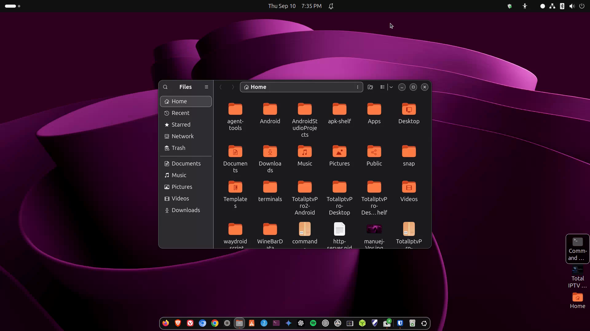

Files app & folders
Home, Downloads, Trash, and how folders work on Ubuntu.

media/images/03-files.png with a GTR capture when ready.
Steps
- Open Files from the dock (folder icon) or search “Files”.
- In the sidebar: Home is your personal folder. Downloads, Documents, Pictures, Music, Videos are the usual places — same idea as Windows.
- Delete a file: right-click → Move to Trash. Empty Trash from the sidebar when you are sure.
- USB drives appear in the sidebar when plugged in. Click the eject icon before unplugging.
Where am I?
Full path example: /home/bill/Downloads/photo.jpg. The terminal (later lessons) uses these paths. The Files app hides the /home/... wording sometimes, but it is always there.
Hidden files
Press Ctrl+H to show files starting with a dot (like .config). These are settings — leave them alone until you know why you need them.
Careful Do not delete random folders outside Home unless a guide tells you to. System folders under
/ keep Ubuntu running.